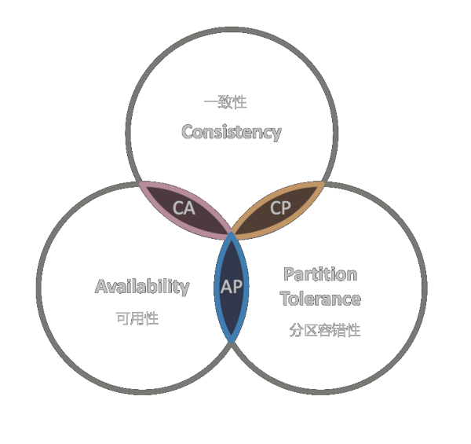
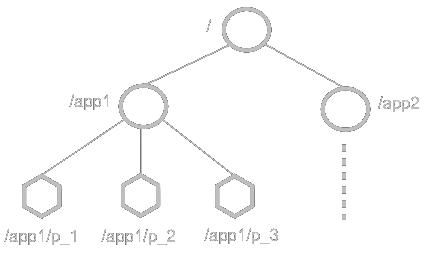

ZooKeeper是一种分布式协调服务。

一致性（Consistency）：在分布式环境中，一致性是指数据在多个副本之间是否能够保持一致的特性，等同于所有节点访问同一份最新的数据副本。在一致性的需求下，当一个系统在数据一致的状态下执行更新操作后，应该保证系统的数据仍然处于一致的状态。
可用性（Availability）：每次请求都能获取到正确的响应，但是不保证获取的数据为最新数据。
分区容错性（Partition tolerance）：分布式系统在遇到任何网络分区故障的时候，仍然需要能够保证对外提供满足一致性和可用性的服务，除非是整个网络环境都发生了故障。
一个分布式系统最多只能同时满足三项中的两项，P是必须的，Zookeeper保证的是CP。
| Client | 分布式应用集群中的一个节点 |
| Server | ZooKeeper集群中的一个节点 |
| Ensemble | ZooKeeper服务器组，形成所需的最小节点数为3 |
| Leader | ZooKeeper集群内部各个服务的调度者 |
| Follower | ZooKeeper集群内部跟随Leader指令的节点 |
| Observer | 与Follower类似，但不参与投票 |
Leader选举分为Zookeeper集群启动时选举和Zookeeper集群运行期间重新选举两种情况。
若节点服务器启动时发现已经有Leader节点，则不再进行投票。
为防止脑裂导致服务瘫痪，最好使用奇数数量的Zookeeper节点。
leaderfollowerobserver
Zookkeeper提供的名称空间类似于标准文件系统。
zkCli.sh # 查看节点下子节点 ls / # 查看Znode节点信息 # get -s / stat / # cZxid = 0x0 # ctime = Thu Jan 01 08:00:00 CST 1970 # mZxid = 0x0 # mtime = Thu Jan 01 08:00:00 CST 1970 # pZxid = 0x100000003 # cversion = 0 # dataVersion = 0 # aclVersion = 0 # ephemeralOwner = 0x0 # dataLength = 0 # numChildren = 2
# 对所有主机统一修改 vim /etc/hosts # G # o # ... # wq more /etc/hosts
192.168.1.101 zookeeper1 192.168.1.102 zookeeper2 192.168.1.103 zookeeper3
# 对每台主机定制修改 hostnamectl set-hostname 'zookeeper1' hostname -f
yum -y install java JAVA_HOME=$(echo /usr/lib/jvm/java-*-openjdk-*) grep '^export JAVA_HOME' /etc/profile ||\ echo "export JAVA_HOME=${JAVA_HOME}">>/etc/profile tail -n 2 /etc/profile
# 下载Zookeeper # ZOOKEEPER_REPO='http://archive.apache.org/dist/zookeeper' ZOOKEEPER_REPO='http://192.168.19.90/files/zookeeper' ZOOKEEPER_LOCATION='/zookeeper' # 安装位置 ZOOKEEPER_VERSION='3.5.9' # 安装版本 ZOOKEEPER_ARCHIVE="${ZOOKEEPER_REPO}/zookeeper-${ZOOKEEPER_VERSION}/apache-zookeeper-${ZOOKEEPER_VERSION}-bin.tar.gz" echo $ZOOKEEPER_ARCHIVE wget $ZOOKEEPER_ARCHIVE tar -xvf "./apache-zookeeper-${ZOOKEEPER_VERSION}-bin.tar.gz" pushd "./apache-zookeeper-${ZOOKEEPER_VERSION}-bin" mkdir data log cp -f ./conf/zoo_sample.cfg ./conf/zoo.cfg cp -rf ./* $ZOOKEEPER_LOCATION popd # 修改基本配置 pushd $ZOOKEEPER_LOCATION/conf ZOOKEEPER_DAT=$ZOOKEEPER_LOCATION/data ZOOKEEPER_LOG=$ZOOKEEPER_LOCATION/log grep -q '^dataDir=' ./zoo.cfg &&\ sed -ri "/^dataDir=/s/=.+$/=`echo ${ZOOKEEPER_DAT//\//\\\/}`/" ./zoo.cfg ||\ echo "dataDir=${ZOOKEEPER_DAT}">>./zoo.cfg grep -q '^dataLogDir=' ./zoo.cfg &&\ sed -ri "/^dataLogDir=/s/=.+$/=`echo ${ZOOKEEPER_LOG//\//\\\/}`/" ./zoo.cfg ||\ echo "dataLogDir=${ZOOKEEPER_LOG}">>./zoo.cfg grep '^data' ./zoo.cfg popd # 加入环境变量 grep -q '^export ZOOKEEPER_HOME' /etc/profile ||\ echo "export ZOOKEEPER_HOME=${ZOOKEEPER_LOCATION}">>/etc/profile && \ echo 'export PATH=$ZOOKEEPER_HOME/bin:$PATH'>>/etc/profile grep '^export ' /etc/profile source /etc/profile
# myid hostname=`hostname -f` hostid=${hostname:0-1} echo $hostid>$ZOOKEEPER_HOME/data/myid head -n 1 $ZOOKEEPER_HOME/data/myid # Server.Index echo "server.1=zookeeper1:2888:3888">>$ZOOKEEPER_HOME/conf/zoo.cfg echo "server.2=zookeeper2:2888:3888">>$ZOOKEEPER_HOME/conf/zoo.cfg echo "server.3=zookeeper3:2888:3888">>$ZOOKEEPER_HOME/conf/zoo.cfg tail -n 5 $ZOOKEEPER_HOME/conf/zoo.cfg
# start | stop | restart | status zkServer.sh start zkServer.sh status | grep 'Mode:'